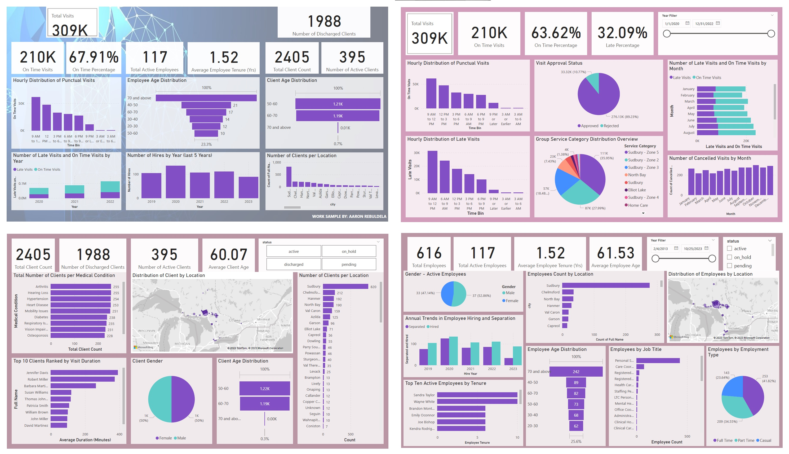

II. Power BI Work Sample: Healthcare Industry Case Study with Advanced Data Integration
This work sample presents a detailed case study on the healthcare industry, utilizing Power BI for advanced data visualization and analysis. It demonstrates the use of DAX (Data Analysis Expressions) for sophisticated data modeling and Python scripts for efficient data cleaning and preparation. The project highlights the integration of data from external sources via APIs, with a specific focus on connecting and manipulating healthcare data available on GitHub. This case study showcases the ability to create insightful, interactive dashboards in Power BI that provide a deep dive into healthcare analytics, emphasizing data-driven decision-making in the industry. This sample exemplifies not just expertise in Power BI and DAX, but also proficiency in Python for data manipulation and the innovative use of APIs for data sourcing.